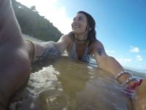

I tell you about me...
Hi!
I would define myself as a curious person that is frequently searching for new concepts and topics. I like to keep myself updated on trends. I ́ve always admired illustrators so I would love to think about having their lifestyle. My first choice was to study Interior Design and after that, I realized that what I liked the most was design in general. Then I graduated as an Art Director to close that circle and I started thinking about illustration in a more professional way. Art Direction allowed me to enclose the whole creative process from start to finish, preparing myself to understand how each fundamental piece works. This would let me obtain a complete overview of a communication campaign or a creative project. I work as part of the technical staff at Colón Theatre of Buenos Aires since 2011. Although the tasks I don’t connect me so much to my creative side, belonging to such a cultural monument allowed me to discover how stage designers and technicians work all together to create magnificent plays that enclose an unequaled amount of art and culture. Basically, my job experience has always centered on being part of team works where communication is as important as a natural predisposition to collaborate. Whereas job as a freelance designer is most of the time a lonely job, you never stop working on teams because it is always necessary to have feedback from the client and an external opinion of colleagues. For me, the basis of everything is being self-confident with what you are doing the way you are doing it. Being sure that in spite of arising problems everything can be solved.